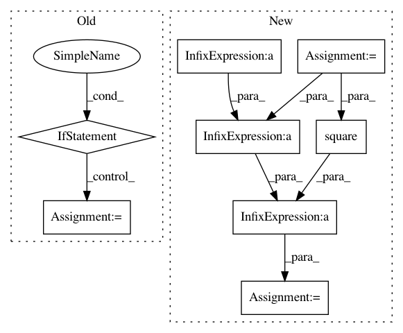

adfa6de1d87baced85215985da9ed2ce671c2a93,GPy/kern/rbf.py,rbf,_K_computations,#rbf#Any#Any#,185
Before Change
if X2 is None: X2 = X
self._K_dist = X[:,None,:]-X2[None,:,:] // this can be computationally heavy
self._params = np.empty(shape=(1,0)) //ensure the next section gets called
if not np.all(self._params == self._get_params()):
self._params == self._get_params()
self._K_dist2 = np.square(self._K_dist/self.lengthscale)
self._K_dvar = np.exp(-0.5*self._K_dist2.sum(-1))
def _psi_computations(self,Z,mu,S):
//here are the "statistics" for psi1 and psi2
if not np.all(Z==self._Z):
//Z has changed, compute Z specific stuff
After Change
//never do this: self._K_dist = X[:,None,:]-X2[None,:,:] // this can be computationally heavy
//_K_dist = X[:,None,:]-X2[None,:,:]
//_K_dist2 = np.square(_K_dist/self.lengthscale)
X = X/self.lengthscale
X2 = X2/self.lengthscale
self._K_dist2 = (-2.*np.dot(X, X2.T) + np.sum(np.square(X),1)[:,None] + np.sum(np.square(X2),1)[None,:])
self._K_dvar = np.exp(-0.5*self._K_dist2)
def _psi_computations(self,Z,mu,S):
//here are the "statistics" for psi1 and psi2
In pattern: SUPERPATTERN
Frequency: 3
Non-data size: 8
Instances
Project Name: SheffieldML/GPy
Commit Name: adfa6de1d87baced85215985da9ed2ce671c2a93
Time: 2013-03-27
Author: james.hensman@gmail.com
File Name: GPy/kern/rbf.py
Class Name: rbf
Method Name: _K_computations
Project Name: SheffieldML/GPy
Commit Name: f2fa9bd74d0141c2869d2090ed28fa4f9ffa49e4
Time: 2013-09-16
Author: james.hensman@gmail.com
File Name: GPy/likelihoods/noise_models/binomial_noise.py
Class Name: Binomial
Method Name: _moments_match_analytical
Project Name: SheffieldML/GPy
Commit Name: 00d335444d91ffdd75c9a0d921f8f0dbe2594ea9
Time: 2013-09-14
Author: lawrennd@gmail.com
File Name: GPy/kern/parts/rational_quadratic.py
Class Name: RationalQuadratic
Method Name: dK_dX